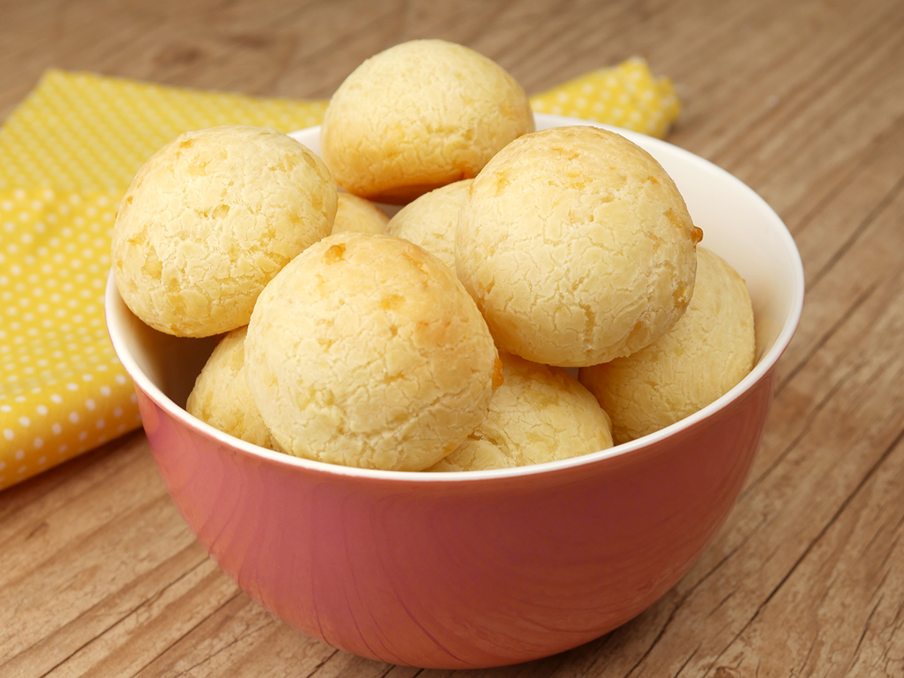

Pão de queijo

Ingredientes
- 220 gramas de Polvilho doce ou azedo (2 xícaras)
- 200 gramas de Requeijão de bisnaga
- 100 gramas de queijo parmesão ralado
Modo de preparo
-
Coloque em uma tigela o polvilho, o requeijão e o queijo parmesão.
-
Misture tudo muito bem até ficar uma massa macia e desgrudando das
mãos.
-
Faça bolinhas e coloque em uma forma untada com manteiga ou óleo.
-
Leve ao forno preaquecido a 200°C por cerca de 20 minutos ou até que
dourem.